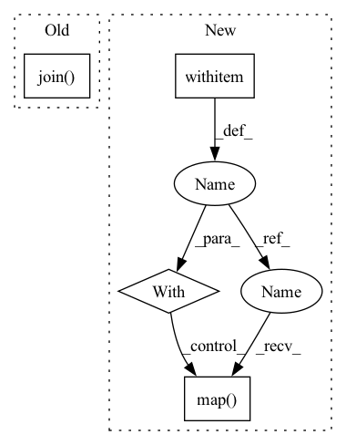

Pattern ID :30619
Before Change
def get_test_data(image_folder):
image_list = [cv2.imread(img) for img in glob.glob(os.path.join(image_folder, "*.png"))]
name_list = [os.path.basename(img) for img in glob.glob(os.path.join( image_folder, "*.png") )]
test_ds = RoofTopDataset(image_list, name_list=name_list, test_mode=True)
return test_dsAfter Change
def get_test_data(image_folder):
image_files = glob.glob(image_folder + "/*.png")
image_list = []
with concurrent .futures.ProcessPoolExecutor() as executor:
for image in executor.map( load_img, image_files) :
image_list.append(image)
name_list = [os.path.basename(img) for img in image_files]
test_ds = RoofTopDataset(image_list, name_list=name_list, test_mode=True)In pattern: SUPERPATTERN
Frequency: 3
Non-data size: 4
Instances Fragment ID: 90422219
Project Name: chanceqz/rooftopsegmatation
Commit Name: 73672cb80953fd4a7f7faea25857fa5353b4d5ea
Time: 2021-04-26
Author: qz_gis@163.com
File Name: roottop_dataset.py
M Class Name: AnonimousClass
N Class Name: AnonimousClass
M Method Name: get_test_data(1)
N Method Name: get_test_data(1)
M Parent Class:
N Parent Class:
M File Name: roottop_dataset.py
N File Name: roottop_dataset.py
M Start Line: 85
M End Line: 86
N Start Line: 108
N End Line: 113
Before Change
def get_train_valid_data(image_folder, mask_folder):
image_list = [cv2.imread(img) for img in glob.glob(os.path.join( image_folder, "*.png") )]
mask_list = [cv2.imread(img, cv2.IMREAD_GRAYSCALE) for img in glob.glob(os.path.join(mask_folder, "*.png"))]
train_ds = RoofTopDataset(image_list, mask_list, transform=train_trfm)
valid_ds = RoofTopDataset(image_list, mask_list, transform=val_trfm)After Change
def get_train_valid_data(image_folder, mask_folder):
image_list, mask_list = [], []
with concurrent .futures.ProcessPoolExecutor() as executor:
image_files = glob.glob(image_folder + "/*.png")
mask_files = glob.glob(mask_folder + "/*.png")
for images, masks in executor.map( load_img_mask, image_files, mask_files) :
image_list.append(images)
mask_list.append(masks)
Fragment ID: 90422218
Project Name: chanceqz/rooftopsegmatation
Commit Name: 73672cb80953fd4a7f7faea25857fa5353b4d5ea
Time: 2021-04-26
Author: qz_gis@163.com
File Name: roottop_dataset.py
M Class Name: AnonimousClass
N Class Name: AnonimousClass
M Method Name: get_train_valid_data(2)
N Method Name: get_train_valid_data(2)
M Parent Class:
N Parent Class:
M File Name: roottop_dataset.py
N File Name: roottop_dataset.py
M Start Line: 76
M End Line: 81
N Start Line: 92
N End Line: 104
Before Change
os.mkdir(OUTPUT_FOLDER)
for scan_name in SCAN_NAMES:
output_filename_prefix = os.path.join( OUTPUT_FOLDER, scan_name)
// if os.path.exists(output_filename_prefix + "_vert.npy"): continue
print("-"*20+"begin")
print(datetime.datetime.now())After Change
print("Creating new data folder: {}".format(OUTPUT_FOLDER))
os.mkdir(OUTPUT_FOLDER)
with Pool () as pool:
pool.map( export_one_scan, SCAN_NAMES)
if __name__=="__main__":
batch_export()
Fragment ID: 90422216
Project Name: daveredrum/scanrefer
Commit Name: 8228cee8921215147a83db92c906de372076df1c
Time: 2022-06-08
Author: eamonn0223@gmail.com
File Name: data/scannet/batch_load_scannet_data.py
M Class Name: AnonimousClass
N Class Name: AnonimousClass
M Method Name: batch_export(0)
N Method Name: batch_export(0)
M Parent Class:
N Parent Class:
M File Name: data/scannet/batch_load_scannet_data.py
N File Name: data/scannet/batch_load_scannet_data.py
M Start Line: 71
M End Line: 82
N Start Line: 73
N End Line: 75
Before Change
def get_test_data(image_folder):
image_list = [cv2.imread(img) for img in glob.glob(os.path.join( image_folder, "*.png") )]
name_list = [os.path.basename(img) for img in glob.glob(os.path.join(image_folder, "*.png"))]
test_ds = RoofTopDataset(image_list, name_list=name_list, test_mode=True)
After Change
def get_test_data(image_folder):
image_files = glob.glob(image_folder + "/*.png")
image_list = []
with concurrent .futures.ProcessPoolExecutor() as executor:
for image in executor.map( load_img, image_files) :
image_list.append(image)
name_list = [os.path.basename(img) for img in image_files]
test_ds = RoofTopDataset(image_list, name_list=name_list, test_mode=True) Fragment ID: 90422221
Project Name: chanceqz/rooftopsegmatation
Commit Name: 73672cb80953fd4a7f7faea25857fa5353b4d5ea
Time: 2021-04-26
Author: qz_gis@163.com
File Name: roottop_dataset.py
M Class Name: AnonimousClass
N Class Name: AnonimousClass
M Method Name: get_test_data(1)
N Method Name: get_test_data(1)
M Parent Class:
N Parent Class:
M File Name: roottop_dataset.py
N File Name: roottop_dataset.py
M Start Line: 85
M End Line: 86
N Start Line: 108
N End Line: 113